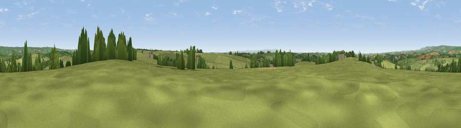

Viewpoint near Rose Ash
#17606 in England · top 30% of its area beats it · near Rose AshWhere it is
The exact computed spot (SS 80575 21875). Click the marker for map links.
The view, rendered

A 360° render of this exact spot computed from the terrain model, tree cover and land cover — summer colours, afternoon light, calibrated against photographs of famous viewpoints. Real trees, hedges and buildings will differ in detail.
The panorama
Grey silhouette: terrain skyline in each direction (720 bearings, Earth curvature and refraction included). Dashed green: skyline with trees (+15 m) and buildings (+8 m) as obstacles. Blue strip: how far the ground is visible on each bearing.
Where the view opens
Wedge length = distance to the farthest visible ground on that bearing (vegetation-aware). Rings at 10, 25 and 50 km.
What fills the view
87% grassland · 8% woodland · 5% cropland
Angular shares of the visible panorama (visual magnitude), not map area. Landscape diversity 0.22 (0–1 Shannon).
Key numbers
More beautiful places nearby
The staircase of upgrades: each row has a higher view potential than everything closer. Driving times are estimates from straight-line distance, calibrated against real road routing — check an actual route before setting out.
| Place | Direction | Drive | Score |
|---|---|---|---|
| Viewpoint near Knowstone | E · 2 km | ~4 min | 57.0 |
| Viewpoint near Rose Ash | W · 2 km | ~5 min | 58.4 |
| Sindercombe Hill | NNW · 7 km | ~14 min | 61.3 |
| Viewpoint near West Anstey | NNE · 7 km | ~15 min | 62.2 |
| Viewpoint near Twitchen | N · 8 km | ~17 min | 66.0 |
| Stoodleigh Beacon | ESE · 8 km | ~17 min | 66.7 |
| Viewpoint near Twitchen | NNW · 11 km | ~21 min | 69.1 |
| Viewpoint near Simonsbath | NNW · 15 km | ~27 min | 73.1 |
50.98386, -3.70273 · source: screening · position refined by local search. Computed location — check access rights before visiting.